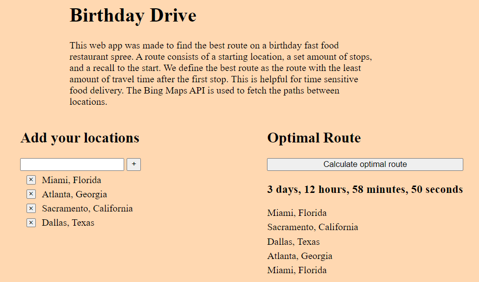

This is an idea I had near one of my birthdays. Something people do is claim many birthday treats from different restaurants, in a spree fashion. The Birthday Drive Web App is meant to be used to obtain the optimal route for this sort of endeavour, the one with the least travel time from start. That way the food is freshest when you arrive at your final destination. The backend uses Bing Maps API to acquire information from the addresses that are put in by the user, and then a backtracking algorithm to find the optimal route.
